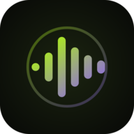

repo.rossmel.com
Programs for rOS and any Linux desktop
Programas para rOS y cualquier escritorio Linux
The programs I build, signed and packaged for pacman, APT and DNF. Add the repository once and updates arrive with the rest of your system.
Los programas que hago, firmados y empaquetados para pacman, APT y DNF. Agregas el repositorio una vez y las actualizaciones llegan con las del resto de tu sistema.
Programs
Programas
They're made for rOS, my flavor of Arch Linux, and they work on any other distribution too.
Están hechos para rOS, mi flavor de Arch Linux, y también funcionan en cualquier otra distribución.

ross_visualizer
A music visualizer that listens to everything your computer plays and paints it with the colors of the album art, full screen or as an overlay above your windows.
Un visualizador de música que escucha todo lo que suena en tu compu y lo pinta con los colores de la portada, en pantalla completa o como overlay encima de tus ventanas.
transcribe
Turns audio and video into text on your own computer, offline: a list to pick files from, timestamps and subtitles. Comes with record, to record from the microphone and transcribe.
Convierte audio y video en texto en tu propia compu, sin internet: una lista para elegir archivos, tiempos y subtítulos. Viene con record, para grabar del micrófono y transcribir.
ross_fisheye
A fisheye magnifier: one shortcut freezes the screen under a lens that bulges it like cloth pushed up by a glass ball. For niri, Hyprland and Sway.
Una lupa de ojo de pez: un atajo congela la pantalla bajo una lente que la abomba como una tela empujada por una bola de cristal. Para niri, Hyprland y Sway.
Nothing matches. Try another word or clear the filters.No hay coincidencias. Prueba otra palabra o quita los filtros.
Signed and private. Every package and repository index is signed, so your package manager rejects anything that was tampered with. There are no accounts and no trackers: downloads and update checks are only counted per day, by program, version, kind of client and country, with no IP address or anything that tells one person from another (how).
Firmado y privado. Cada paquete e índice del repositorio va firmado, así tu gestor de paquetes rechaza cualquier cosa alterada. No hay cuentas ni rastreadores: las descargas y búsquedas de actualizaciones solo se cuentan por día, programa, versión, tipo de cliente y país, sin IP ni nada que distinga a una persona de otra (cómo).